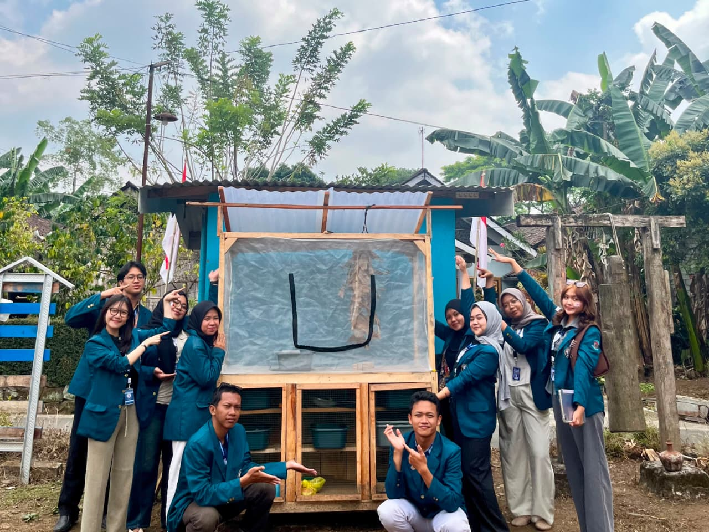
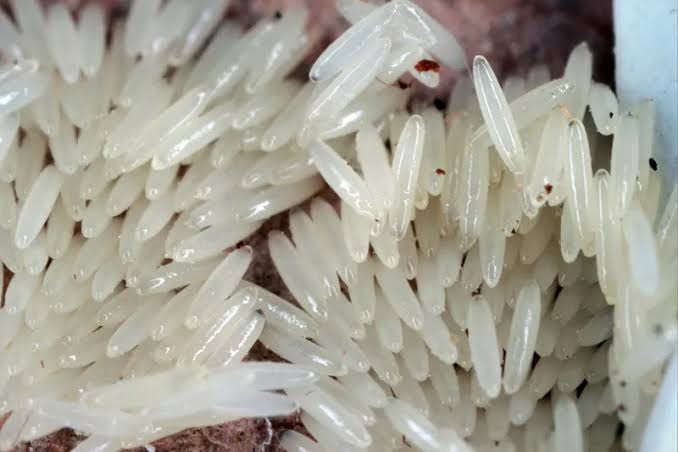
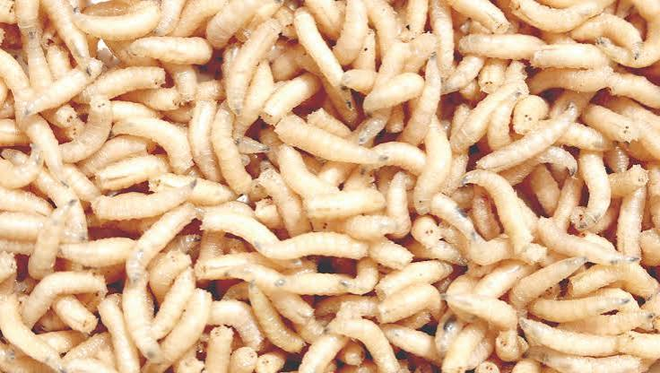
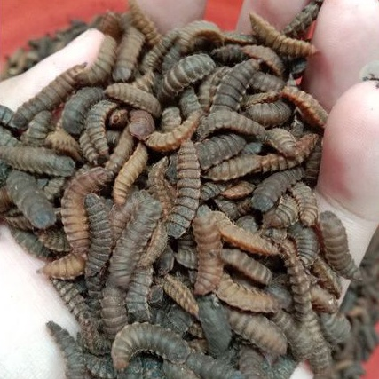
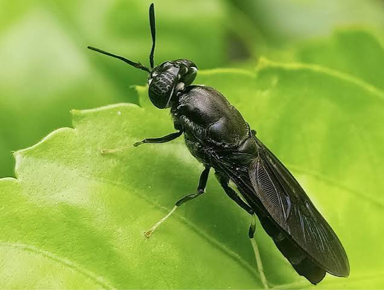

Budidaya maggot BSF · Kelurahan Randuacir
Kamu baru saja scan QR di kandang. Pantau bagaimana sampah organik diolah oleh maggot, dari pakan hingga perkembangannya.

Data hari ini
Sampah diolah
0kg
Total panen
0kg
Box berjalan
0
Siklus rata-rata
0hari
Per box
Tren
Siklus hidup
Maggot BSF melewati empat tahap, sekitar 30 sampai 40 hari total — lalat dewasanya balik bertelur lagi buat mulai siklus baru. Klik tiap tahap buat lihat detailnya.

Telur
Hari 0–4
Lihat detail
Larva makan aktif
Hari 5–18
Lihat detail
Prepupa & pupa
Hari 19–32
Lihat detail
Lalat BSF dewasa
Hari 33–40
Lihat detailFase prepupa, pupa, dan lalat dewasa dipantau langsung di kandang jaring — cek statusnya di bagian “Status tiap box” di atas.
Ciri-ciri
Tiga tanda ini biasanya muncul bareng. Kalau box kamu sudah menunjukkan ketiganya, itu yang bikin statusnya berubah jadi “Siap panen” di bagian Status tiap box.
Warna berubah gelap
Warna badan berubah dari putih pucat jadi kecoklatan gelap.
Ukuran maksimal
Ukuran sudah maksimal, sekitar 2 sentimeter, gerakan mulai melambat.
Merayap ke tepi
Mulai merayap naik ke tepi wadah, mencari tempat kering untuk pupasi.
Panduan
Bahan organik basah yang cepat terurai, jadi makanan favorit maggot.
Bisa bikin larva stres, mati, atau menarik hama lain ke kandang.
Pertanyaan umum
Wajar kalau awalnya kurang familiar sama maggot BSF, jadi ini jawaban buat pertanyaan yang paling sering muncul.
Kalau dirawat dengan benar, kandang maggot tidak berbau menyengat. Larva maggot justru mempercepat sampah organik terurai, jadi baunya jauh lebih ringan dibanding sampah organik yang menumpuk di TPS. Bau tajam biasanya baru muncul kalau media terlalu basah atau kebanyakan pakan, dan itu ada cara mudah menanganinya. Pengurus kandang sudah punya panduan lengkap untuk mengatasinya.
Aman. Maggot BSF (Hermetia illucens) tidak menggigit, tidak menyengat, dan tidak membawa penyakit ke manusia. Ini beda jauh dari lalat rumah biasa. Lalat dewasanya bahkan tidak makan sama sekali, cuma minum air, jadi tidak hinggap sembarangan ke makanan warga. Yang perlu dijaga cuma supaya box tidak dibongkar-bongkar anak kecil, sama seperti barang lain di sekitar rumah.
Lalat dewasanya dipelihara di kandang jaring tertutup, khusus untuk kawin dan bertelur, jadi tidak berkeliaran bebas. Lalat BSF dewasa juga bukan tipe yang suka hinggap ke rumah atau makanan orang. Umurnya pendek, sekitar 5 sampai 8 hari, dan sepanjang hidupnya cuma fokus cari pasangan dan bertelur, bukan cari makanan manusia.
Tetap hidup, tapi butuh sedikit penyesuaian dari pengurus. Musim hujan bikin media gampang kelewat basah, jadi perlu lebih sering ditambah bahan kering penyerap. Musim kemarau sebaliknya, media lebih cepat kering jadi perlu sedikit tambahan air. Selama suhu ruang kandang terjaga sekitar 27 sampai 30°C, siklusnya tetap jalan normal di kedua musim.
Intinya sampah organik basah yang cepat terurai, seperti sisa nasi, sayur, buah, ampas kopi atau teh, dan kulit telur. Yang tidak boleh masuk kandang misalnya plastik, styrofoam, minyak, santan, tulang, dan bahan berbahaya lain. Kalau masih ragu sama satu item tertentu, coba cek langsung lewat kotak cek sampah di atas biar tidak salah tebak.
Rata-rata sekitar 18 hari sejak larva ditanam sampai siap dipanen, tergantung suhu dan jenis pakan. Satu siklus penuh sampai lalat dewasa bertelur lagi butuh waktu 30 sampai 40 hari. Tapi warga tidak perlu menunggu selama itu. Begitu larva sudah cukup besar, langsung bisa dipanen sebagai pakan ternak atau dijual.
Dibanding dibuang ke TPS atau TPA yang sejak 1 Agustus sudah tidak menerima sampah organik, maggot mengolahnya jadi dua hasil sekaligus. Sampah rumah tangga berkurang, dan larvanya sendiri jadi produk bernilai untuk pakan ternak atau ikan, bahkan bisa dijual. Prosesnya juga jauh lebih cepat dibanding kompos biasa, hitungannya hari, bukan bulan.
Enggak perlu. Kalau kamu warga, bagian kamu cuma satu, yaitu memisahkan sampah organik dan membawanya ke kandang. Kalau ragu sama satu item, cek dulu lewat kotak cek sampah di atas. Urusan merawat larva, menjaga kelembapan, sampai memanen sepenuhnya jadi tanggung jawab pengurus kandang.
Larva yang dipanen, biasa disebut maggot segar atau maggot kering, punya kandungan protein tinggi. Umumnya dipakai sebagai pakan ternak seperti ayam, bebek, atau ikan lele, baik dipakai sendiri oleh peternak sekitar maupun dijual. Sisa media yang sudah terurai, disebut kasgot, juga bisa dipakai sebagai pupuk organik untuk tanaman.
Bisa langsung datang ke lokasi kandang, atau chat pengurus dulu lewat kontak di bagian bawah halaman ini. Warga yang masih penasaran atau ragu justru paling disarankan untuk lihat langsung. Biasanya keraguan soal bau atau kebersihan hilang begitu lihat kondisi kandang aslinya.